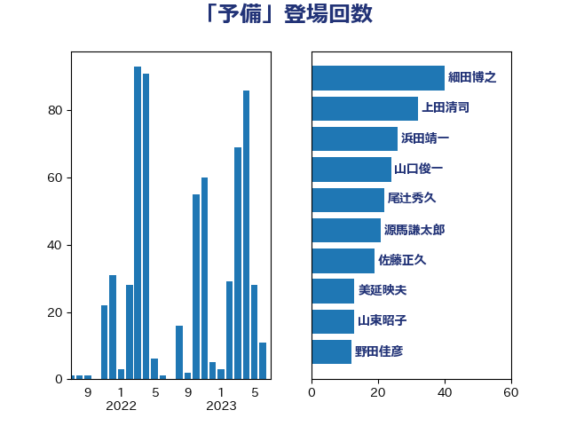

単語「予備」

| 岸信夫 | 自由民主党 | 43 回 |
| 上田清司 | 国民民主党 | 32 回 |
| 細田博之 | 自由民主党 | 23 回 |
| 山東昭子 | 自由民主党 | 19 回 |
| 山口俊一 | 自由民主党 | 13 回 |
| 福岡資麿 | 自由民主党 | 12 回 |
| 岩谷良平 | 日本維新の会 | 11 回 |
| 城井崇 | 立憲民主党 | 9 回 |
| 高木毅 | 自由民主党 | 9 回 |
| 尾辻秀久 | 無所属 | 8 回 |
| 篠原豪 | 立憲民主党 | 8 回 |
| 赤嶺政賢 | 日本共産党 | 8 回 |
| 佐藤正久 | 自由民主党 | 7 回 |
| 山本太郎 | れいわ新選組 | 6 回 |
| 山岡達丸 | 立憲民主党 | 5 回 |
| 山田賢司 | 自由民主党 | 5 回 |
| 鎌田さゆり | 立憲民主党 | 5 回 |
| 宮口治子 | 立憲民主党 | 4 回 |
| 梶山弘志 | 自由民主党 | 4 回 |
| 秋本真利 | 自由民主党 | 4 回 |
| 萩生田光一 | 自由民主党 | 4 回 |
| 麻生太郎 | 自由民主党 | 4 回 |
| 田村憲久 | 自由民主党 | 3 回 |
| 神田潤一 | 自由民主党 | 3 回 |
| 羽田次郎 | 立憲民主党 | 3 回 |
| 音喜多駿 | 日本維新の会 | 3 回 |
| 伊藤孝恵 | 国民民主党 | 2 回 |
| 大塚拓 | 自由民主党 | 2 回 |
| 太栄志 | 立憲民主党 | 2 回 |
| 平林晃 | 公明党 | 2 回 |
| 後藤茂之 | 自由民主党 | 2 回 |
| 松本尚 | 自由民主党 | 2 回 |
| 武部新 | 自由民主党 | 2 回 |
| 浜野喜史 | 国民民主党 | 2 回 |
| 田村まみ | 国民民主党 | 2 回 |
| 鈴木敦 | 国民民主党 | 2 回 |
| 阿部知子 | 立憲民主党 | 2 回 |
| 三浦信祐 | 公明党 | 1 回 |
| 中野英幸 | 自由民主党 | 1 回 |
| 前原誠司 | 国民民主党 | 1 回 |
| 勝部賢志 | 立憲民主党 | 1 回 |
| 北神圭朗 | 無所属 | 1 回 |
| 吉田統彦 | 立憲民主党 | 1 回 |
| 大塚耕平 | 国民民主党 | 1 回 |
| 大島敦 | 立憲民主党 | 1 回 |
| 宮本徹 | 日本共産党 | 1 回 |
| 山崎誠 | 立憲民主党 | 1 回 |
| 山本順三 | 自由民主党 | 1 回 |
| 山添拓 | 日本共産党 | 1 回 |
| 山際大志郎 | 自由民主党 | 1 回 |
| 御法川信英 | 自由民主党 | 1 回 |
| 徳永久志 | 立憲民主党 | 1 回 |
| 末次精一 | 立憲民主党 | 1 回 |
| 柿沢未途 | 無所属 | 1 回 |
| 梅村聡 | 日本維新の会 | 1 回 |
| 江島潔 | 自由民主党 | 1 回 |
| 猪口邦子 | 自由民主党 | 1 回 |
| 田村智子 | 日本共産党 | 1 回 |
| 盛山正仁 | 自由民主党 | 1 回 |
| 石垣のりこ | 立憲民主党 | 1 回 |
| 福山哲郎 | 立憲民主党 | 1 回 |
| 細田健一 | 自由民主党 | 1 回 |
| 芳賀道也 | 国民民主党 | 1 回 |
| 菅義偉 | 自由民主党 | 1 回 |
| 足立康史 | 日本維新の会 | 1 回 |
| 金村龍那 | 日本維新の会 | 1 回 |
| 阿部弘樹 | 日本維新の会 | 1 回 |
| 馬場伸幸 | 日本維新の会 | 1 回 |
| 高橋千鶴子 | 日本共産党 | 1 回 |
| 鬼木誠 | 立憲民主党 | 1 回 |